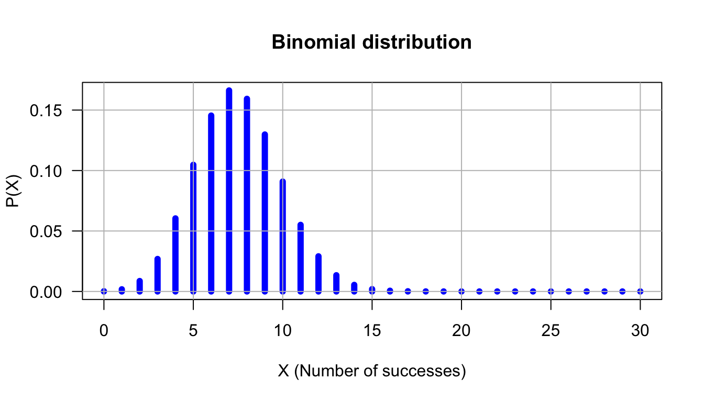
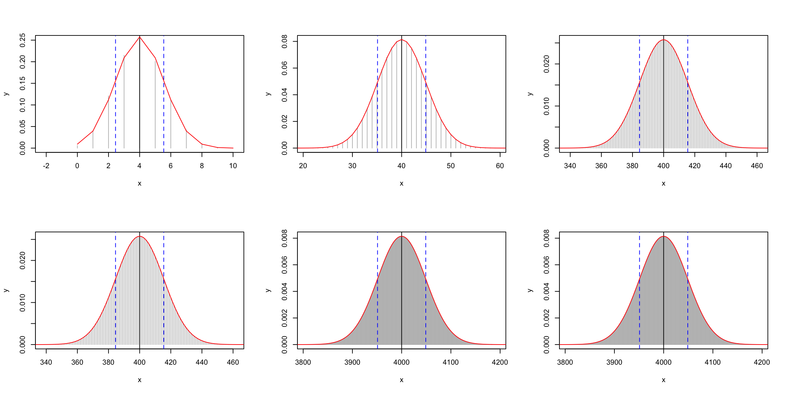

Curve (line plot)

Jacques van Helden
2019-09-13
This tutorial aims at discovering the fundamental elements of the R statistical language.
We will briefly survey the following concepts.
Handling variables
Basic data structures
Using functions
Graph drawing
Distributions of probabilities
Example: an addition with R.
At the R prompt, type the following instruction and press the Enter key.
[1] 7The result (\(7\)) of the addition is printed out, preceded by an index \([1]\) (we will explain later why this index appears).
In R, the succession of a the hyphen and “smaller than” characters (<-) serves to assign a value to a variable. If the variable does not exist yet, it is created.
For example
creates a variable named \(a\), and assigns it the value \(2\).
The result can be displayed with the print() function.
[1] 2Remark: R also allows to use the equal symbol (=) to assign a value to a variable. However, we prefer to use the original assignation (<-), to follow the R style recommendations.
A priori, are several conventions can be envisaged to ensure a consistent naming of variables, functions, operators, etc.
For each programming language, the community of programmers defines some standard(s) to ensure a consistency of the published code.
For this course, we will follow the recommendations of hte Google R style guide:
https://google.github.io/styleguide/Rguide.xml
However, for variable idendifiers, the traditional notation variable.name raises some issues for programmers who are familiar with object-oriented languages (e.g. java, python), where the point serves to apply a method (that follows the point) to an object (that precedes the point).
To avoid this confusion, we will use the alternative so-called camel back notation (e.g. variableName). Attention, according to this convention, variable names always start with a lower case, whereas function / method names start with an uppercase.
[1] 2[1] 5[1] 7[1] 3[1] 5[1] 7[1] FALSEInterpretation: == tests whether two variables have the same content. The result is a logical value (TRUE or FALSE).
When the content of a given variable \(a\) is changed, another variable (\(c\)) previously computed from it has no reason to be recomputed if not explicitly requested.
Example:
[1] 32[1] TRUEIn R, the simplest data structure is a vector.
In the previous example, the variable \(a\) contained a single number, but in practice it was stored in a single-entry vector.
The R function print() displays the indices at the beginning of each row. This is useful when displaying a vector with alarge number of entries.
Example: create a variable named threeNumbers, and initialise it with a vector containing the values 27, 12 and 3000.
Tips:
c() combines several values into a vector.[1] 27 12 3000The simplest way to create a series of number is to use the column character :, which generates all integer values between two boundaries;
[1] 0 1 2 3 4 5 6 7 8 9 10 11 12 13 14 15 16 17 18 19 20 21 22
[24] 23 24 25 26 27 28 29 30Note: if the printout of the values extends beyond the width of the console, R goes to the next row but displays between square brackets the index of the first element at the beginning of the new row.
Another example
[1] 58 59 60 61 62 63 64 65 66 67 68 69 70 71 72 73 74
[18] 75 76 77 78 79 80 81 82 83 84 85 86 87 88 89 90 91
[35] 92 93 94 95 96 97 98 99 100 101 102 103 104 105 106 107 108
[52] 109 110 111 112 113 114 115 116 117 118 119 120 121 122 123 124 125
[69] 126 127 128 129 130 131 132 133 134 135 136 137 138 139 140 141 142
[86] 143 144 145 146 147 148 149 150 151 152 153 154 155 156 157R enables to handle vectors in a every practical ways: mathematical operations involving a vector automatically apply to all its elements.
[1] 1 2 3 4 5 6 7 8 9 10 [1] 1 4 9 16 25 36 49 64 81 100The function seq() enables to generate series of bumbers separated by an arbitrary interval.
[1] -1.0 -0.9 -0.8 -0.7 -0.6 -0.5 -0.4 -0.3 -0.2 -0.1 0.0 0.1 0.2 0.3
[15] 0.4 0.5 0.6 0.7 0.8 0.9 1.0Variables are not restricted to numbers: they can contain text (strings of characters).
We will now use the function c() to combine severak character strings into a vector.
# The # symbol allows to insert comments in R code
# Define a vector named "whoami", and
# containing two names
whoami <- c("Denis", "Siméon")
print(whoami) # Comment at the end of a line[1] "Denis" "Siméon"The function paste() enables to concatenate string-containing variables.
# To concatenate the elements of a vector in a single chain, use "collapse"
firstName <- paste(collapse = " ", whoami)
print(firstName)[1] "Denis Siméon"# TO concatenate two vectors, use "sep"
lastName <- "Poisson"
print(paste(sep = " ", firstName, lastName))[1] "Denis Siméon Poisson"## Concatenate 2 vectors with 3 values each
firstNames <- c("George", "Alfred", "Frédéric")
lastNames <- c("Sand", "Musset", "Chopin")
fullNames <- paste(sep = " ", firstNames, lastNames)
print(fullNames)[1] "George Sand" "Alfred Musset" "Frédéric Chopin"Note that the paste() functions can also be used to concatenate all the values of a given vector, but this requires to use the collapse argument insteead of sep.
[1] "George Sand, Alfred Musset, Frédéric Chopin"R includes a large number of functions enabling to draw simple or elaborate graphics. We explore hereafter the simplest methods.
Exercise: on the R console, type help(plot), read the help of the plot() function, and explore the parameters in order to improve the previous graphics. Also consult the help, function for the graphical parameters (help(par).
You could for example, attempt to add the following elements to the figure:
An example of solution is shown in the next section (don’t look before having done the exercise!).
Run the following chunk of code to generate the improved figure.
x <- seq(from = -10, to = 10, by = 0.1)
y <- x^2
plot(x,y,
type="l", # Plot type
main = "Parabole", # Main title
xlab = "x", #X label
ylab = "y = x^2", # Y label
col = "blue", # Curve color
lwd = 3, # Line width
las = 1 # display axis labels horizontally
)
grid(lty = "dashed", col="gray") # Grid
abline(h = 0) # Horizontal line
abline(v = 0) # Vertical lineFor each one of the classical distribution of probabilities, R provides 4 functions-.
Before going any further, read carefully the help for the functions associated to the binomial distribution.
Questions:
Which R function enables to compuote the probabilty mass function (also called “density” for convenience)?
Which R function corresponds to the cumulative distribution function (CDF)?
What is the role of the function rbinom()?
Exercise: assuming a DNA seqsuence with equiprobable nucleotides, draw the expected distribution for the number of Adenin (\(A\)) residues in an oligonucleotide of length 30 (count the adenines on a single strand).
In the forthcoming slides, we will guide you step by step to start the exercise, and you will then be invited to improve the result at your will.
The number of adenins can take any value between \(0\) and \(30\). The problem can be modeled as Bernoulli Schema with \(n=30\) trials, which can each result in either a success (observing and adenin, with \(p=0.25\)) or a failure (any other nucleotide, with probability \(q = 1-p = 0.75\)). The probability to observe exactly \(x\) adenins is thus:
\[P(X=x) = \binom{n}{x} p^x (1-p)^{n-x} = \frac{30!}{x!(30-x)!} \cdot 0.25^x \cdot 0.75^{n-x}\] where \(x\) can take any value between \(0\) and \(30\).
We can select the 4 first values of the pmfvariable defined above (which correspond to number of successes \(x\) from \(0\) to \(4\)) …
[1] 0.0001785821 0.0017858209 0.0086314677 0.0268534550 0.0604202738… or the 4 last values (\(x\) values from \(27\) to \(30\) succeses).
[1] 1.925374e-12 9.508019e-14 3.395721e-15 7.806256e-17The function round() rounds a result with a given number of digits.
[1] 0.000 0.002 0.009 0.027 0.060 0.105 0.145 0.166 0.159 0.130 0.091
[12] 0.055 0.029 0.013 0.005 0.002 0.001 0.000 0.000 0.000 0.000 0.000
[23] 0.000 0.000 0.000 0.000 0.000 0.000 0.000 0.000 0.000However, this is not always the best solution. Indeed, probability values can rapidly reach very small values, and we would thus not like to replace all these values by \(0\) if they are lower than the number of decimals. We would like to see both the order of magnitude, and to show the value with a reasonable number of significant digits. For this, we can use the signif() function.
[1] 1.79e-04 1.79e-03 8.63e-03 2.69e-02 6.04e-02 1.05e-01 1.45e-01
[8] 1.66e-01 1.59e-01 1.30e-01 9.09e-02 5.51e-02 2.91e-02 1.34e-02
[15] 5.43e-03 1.93e-03 6.03e-04 1.66e-04 3.99e-05 8.39e-06 1.54e-06
[22] 2.44e-07 3.33e-08 3.86e-09 3.75e-10 3.00e-11 1.93e-12 9.51e-14
[29] 3.40e-15 7.81e-17 8.67e-19n <- 30; x <- 0:n # Define the X values from 0 to 14
y <- dbinom(x = x, size = n, prob = 0.25) # Poisson density
plot(x,y) # Check the result
This first drawing is not very elegant. The empty circles do not make it easy to perceive the general shape of the distribution. We can attempt to improve its interpretability.
Use the following options of the plot() function to highlight the shape of the distribution. To give you an idea of the target, the expected result is displayed on the next slide.
Choose a type of points (option type) that reflects the height of the probability (valeur \(Y\)) at the different values of \(X\).
Add a title (option main) and specify relevant axis legends (options xlab and ylab)
Color the drawing (option col)
Thicken the lines (option lwd)
Add an horizontal grid (function grid())
make sure that the axis labels are horizontal (option las).

Draw a series of binomial curves with \(n=30\) trials, and probabilities ranging from \(p=0.1\) to \(p=0.9\) by steps of \(0.1\).


Traceabilityand reproducibility of the analyses are crucial issues for sciences. The R function sessionInfo() summarises the software environment used for the current a working session: R version, operating system, loaded libraries/packages and their versions.
R version 3.6.1 (2019-07-05)
Platform: x86_64-apple-darwin15.6.0 (64-bit)
Running under: macOS High Sierra 10.13.6
Matrix products: default
BLAS: /Library/Frameworks/R.framework/Versions/3.6/Resources/lib/libRblas.0.dylib
LAPACK: /Library/Frameworks/R.framework/Versions/3.6/Resources/lib/libRlapack.dylib
locale:
[1] en_US.UTF-8/en_US.UTF-8/en_US.UTF-8/C/en_US.UTF-8/en_US.UTF-8
attached base packages:
[1] stats graphics grDevices utils datasets methods base
other attached packages:
[1] knitr_1.23
loaded via a namespace (and not attached):
[1] compiler_3.6.1 magrittr_1.5 tools_3.6.1 htmltools_0.3.6
[5] yaml_2.2.0 Rcpp_1.0.2 stringi_1.4.3 rmarkdown_1.14
[9] stringr_1.4.0 xfun_0.8 digest_0.6.20 evaluate_0.14